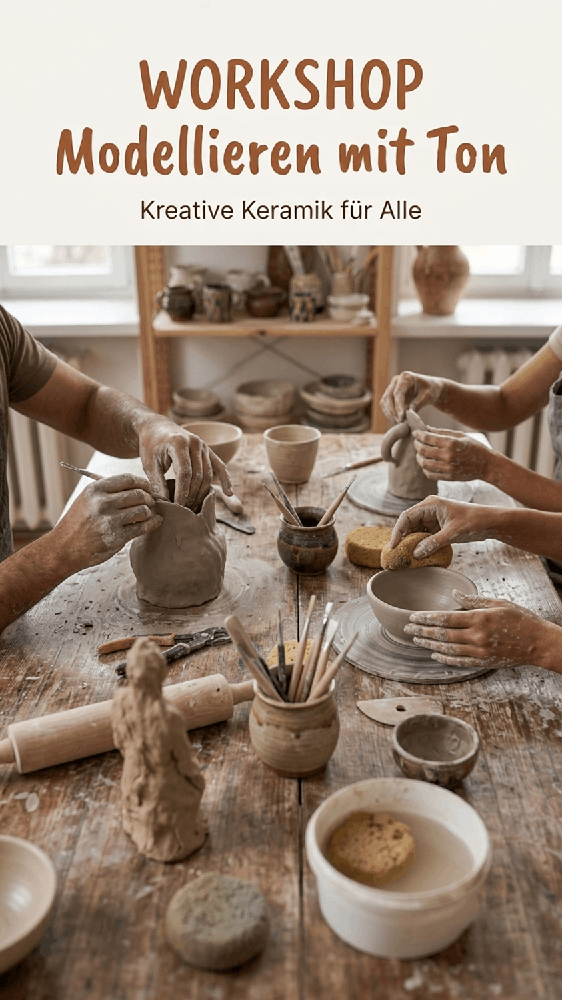
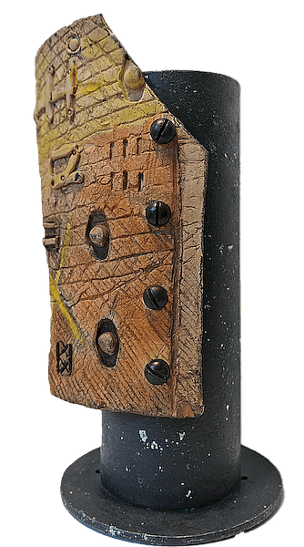
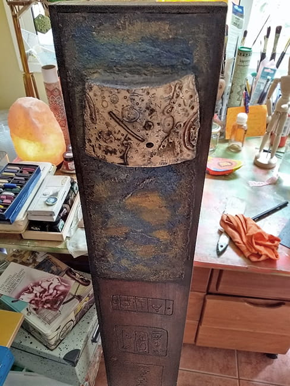

Queridas amigas y queridos amigos:
Mi Agenda Artística Astrológica 2027 ya está lista: una agenda artística bilingüe, en español y alemán, pensada para acompañarlos a lo largo del año que viene.
Incluye 14 reproducciones a todo color de cianotipias que realicé bajo el sol de Tenerife. Cada mes comienza con un calendario lunar que muestra las lunas nuevas y las lunas llenas, así como el paso de la Luna por los signos del zodiaco. A lo largo de toda la agenda hay mucho espacio para escribir, dibujar o simplemente garabatear. En algunas páginas encontrarán también una selección de textos y pensamientos que me han acompañado durante el último año.
La agenda está disponible en dos formatos: DIN A5 y DIN A6.
Las consultas son bienvenidas a través del formulario de contacto.
Espero que disfruten de la agenda y que los acompañe, aunque sea por un tiempo, a lo largo de 2027.

Queridos vecinos y queridas vecinas:
Soy artista y profesora de arte, y me gustaría invitarlos a un taller creativo de modelado en arcilla.
Lo central es disfrutar creando, compartir ideas y trabajar con las manos. No hace falta tener experiencia previa.
Viví muchos años en España antes de mudarme a Berlín. Si quieren, durante el taller podemos practicar un poco de conversación en español, de forma relajada e informal. Eso sí, no es necesario saber español.
El taller tendrá lugar en el barrio de Lichterfelde-Ost, ya sea en mi estudio o, si el tiempo lo permite, en nuestro jardín comunitario. Las fechas son flexibles y se fijarán según el número de personas interesadas.
Las plazas son limitadas. Si quieren más información, no duden en escribirme.
Simplemente envíenme un mensaje a:

Mi obra más reciente: una pieza única de cerámica cocida sobre una base en forma de columna. Un fragmento de un recuerdo mío que creía olvidado desde hacía mucho tiempo.
Como una reliquia desenterrada de un paisaje interior, esta obra conserva las huellas de un lenguaje olvidado. Su superficie cerámica revela signos, impresiones y rastros que parecen flotar entre la memoria y la imaginación. Sobre una columna de metal oscuro, el fragmento se convierte en un recipiente de aquello que persiste bajo la memoria consciente. No es el recuerdo en sí lo que regresa, sino lo que queda de él: transformado por el tiempo y, aun así, capaz de hablar a través de la textura, la forma y la presencia material.

Un tótem es un símbolo arquetípico que expresa la profunda conexión entre el ser humano y la naturaleza, manifestada en animales, plantas, montañas, ríos o manantiales. Refleja la conciencia de pertenecer al mundo natural, arraigada en el inconsciente colectivo y en la dimensión transpersonal de la experiencia humana.
En el mundo actual, cada vez más mediado por la tecnología, esta conciencia se va desvaneciendo y, con ella, una fuente esencial de profundidad espiritual y creatividad individual.
Como formas simbólicas, los tótems median entre el inconsciente colectivo y la conciencia individual. A través de distintas culturas, esta comprensión se ha conservado mediante mitos, rituales e imágenes totémicas.
En mi práctica artística, el motivo del tótem aparece como una estructura simbólica recurrente. En mis pinturas y en mis esculturas de tótems, exploro la relación entre la memoria arcaica, la experiencia interior y las dimensiones espirituales de la naturaleza. Mi obra evoca energías arquetípicas universales y busca hacer tangible lo primordial y lo transpersonal a través del arte contemporáneo.
En noviembre de 2025 participé en artbook.berlin, la feria anual de libros de artista y pequeñas editoriales en el Kunstquartier Bethanien, en Berlín-Kreuzberg. Durante tres días presenté una selección de mi trabajo junto a artistas del libro, grabadores y editoriales independientes de Berlín y de otros lugares.
Fue una oportunidad maravillosa para conocer a otros artistas y mostrar mi obra a un público nuevo en la ciudad que hoy llamo mi hogar. Mi agradecimiento especial a Cornelius y Hanneke por su excelente organización y su cálida hospitalidad.
¿Alguna pregunta? · Ponte en contacto
Escríbeme